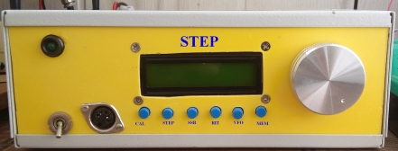

Реверсивный тракт на SA612A. Основная плата трансивера Step.
С наступлением пенсионного возраста и перемещения основной дислокации в весенне-осенний период на дачу, необходим был ещё один недорогой трансивер. Носить с собой с дома на дачу и обратно трансивер «Аматор»" было неудобно.
В журнале «Радиоежегодник» №4 за 2012 год
была опубликована
схема и описание основной платы трансивера Step, разработанной С.
Беленецким, US5MSQ.
Я собрал на основе этой платы тансивер Step с использованием DDS синтезатора на AD9850,
дополнительные изменения
выполнены по рекомендациям автора: добавлен резистор
2.4 кОм
между 1 и
второй ножкой микросхемы DA1, для приведения входного сопротивления
микросхемы SA612 к 1.5 кОм.
Мне попалась одна неисправная микросхема 74HC4053: ключ, который
коммутирует сигнал со входа Mic на первый вывод DA2 не переключался и
микрофонный вход всё время был закорочен на корпус.
С. Беленецкий так советует проверять исправность микросхем 74HC4053:
Проверялись ток утечки по управляющим выводам при установке микросхемы 74HC4053 непосредственно на плату. Кондиционными считались ИМС, при установке которых напряжение на катоде VD1 (цепь управления +Т) не превышало 100 мВ.
Работу и исправность ключей DD1, DD2 можно проверить во включённом состоянии обычным цифровым мультиметром в режиме измерений сопротивления. Испытательное напряжение при этом не превышает 0,2В и совершенно безопасно для микросхем. Сопротивление канала открытого ключа не должно превышать 50 Ом, типовое значение 27-33 Ома.
Хочу предупредить, что микросхемы SA612 — NE602 в DIP корпусах сняты с производства и то, что на Aliexpress пытаются "втюхивать" под видом "оригинала" — откровенная перемаркировка. Из двух попыток покупки, через разные промежутки времени, у разных продавцов, все две оказались неудачны. И хотя спор был решён в мою пользу, неприятный осадочек остался.
В качестве микрофонного усилителя был использован компрессор речевого сигнала на микросхеме SSM2167. С выхода платы компрессора звуковой сигнал через резистор 6.8 кОм, который совместно к конденсатором C30 ёмкостью 10 нФ на основной плате образует НЧ фильтр с частотой среза 2.3 кГц, был подан на вход Mic.
Микросхему стабилизатора DA3 я использовал 76L08,
так как её мне было проще достать, подобрал
только резистор R9 в цепи истока транзистора УПЧ VT1. По даташиту, при
напряжении питания микросхемы 74HC4053 9 В сопротивление открытого
ключа составляет 50 Ом и увеличивается со снижением напряжения питания.
В ключе управления резистор R2 10 кОм заменил на 680 Ом и параллельно
конденсатору C3 10 nF установил стабилитрон на 5,6 В.
Схема реверсивного тракта на SA612. Основная плата трансивера Step.
Печатная плата трансивера Step.
Изготовление печатных плат я заказываю на сайте https://jlcpcb.com, получается качественно и недорого.
Основная плата трансивера Step в собранном виде.
Владимир, EW7AS
Главная | О своём городе | Антенны | Радиосвязь на КВ | Радиосвязь на УКВ |Форум
Copyright © 2023 Сайт радиолюбителей г. Климовичи | Design studio «Zurbagan»